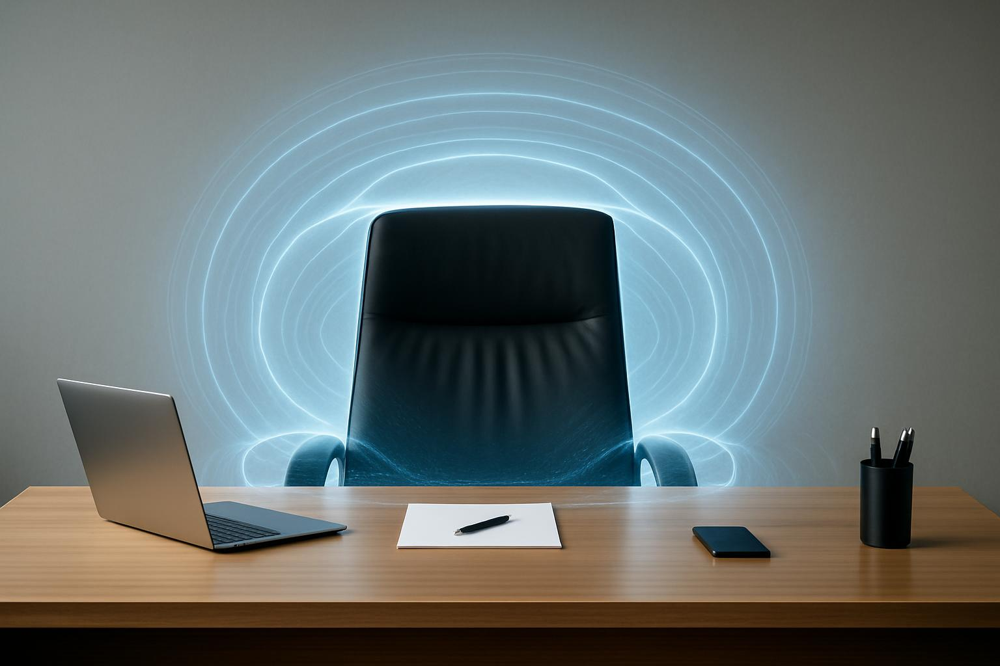

企業家的量子風水
黎Sir 揭秘如何通過辦公室佈局與決策磁場優化，
實證提升企業 40% 營收
企業主常見問題 FAQ
量子風水如何提升企業營收？
透過淨化CEO決策磁場、易經卦象精準預測市場時機、優化辦公室財位與動線，實證可提升企業整體能量頻率，平均帶來20-40%營收成長。
CEO 辦公室最容易犯的風水錯誤是什麼？
背後無靠、手機與WiFi直衝辦公桌，會導致決策猶豫、判斷失準。黎Sir會用量子屏蔽技術＋方位調整徹底解決。
易經真的可以用在商業決策嗎？
易經六十四卦本質是64種商業環境狀態。黎Sir曾多次協助客戶避開市場陷阱並抓住關鍵時機。
企業風水諮詢需要準備什麼資料？
只需提供辦公室平面圖（可手繪）＋公司成立日期＋CEO出生年份，即可進行全面量子風水診斷。
導讀： 在競爭激烈的商業世界，企業家的決策品質與團隊凝聚力才是真正核心競爭力。黎Sir 的量子風水將傳統商業風水升級為科學化系統，結合量子電磁淨化與易經戰略預測，已協助多家企業實現營收顯著成長。

CEO 辦公室決策磁場優化
決策磁場的科學：電磁波如何影響高階主管思維清晰度
現代辦公室充斥手機、WiFi、伺服器產生的低頻電磁雜訊，會干擾人腦 Alpha 波，導致決策疲勞與判斷失準。
黎Sir 量子淨化方案：
- 量子屏蔽技術：將高強度電磁波轉化為無害頻率
- Alpha 波頻率導入：提升專注力與直覺力
您的決策磁場是否正被隱形干擾？
立即預約黎Sir 企業量子風水診斷
立即預約商業風水諮詢
易經與企業戰略的融合
易經六十四卦 × 現代商業決策
| 卦象 | 商業解讀 | 黎Sir 建議 |
|---|---|---|
| 乾為天 | 市場爆發期 | 積極擴張、大膽投資 |
| 坤為地 | 市場盤整期 | 穩固根基、保守經營 |
| 屯卦 | 創業初期 | 尋求貴人、謹慎前行 |
| 未濟卦 | 轉型瓶頸期 | 重新評估戰略 |
真實案例： 某科技公司經黎Sir調整CEO財位＋易經時機校準，一年內避開兩次市場危機並抓住關鍵投資機會，營收增長40%。